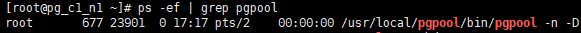
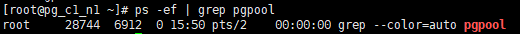
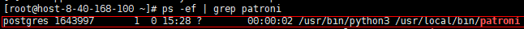
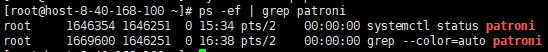

前提条件
- 注册PostgreSQL集群实例前，请确保集群中每个主机已进行注册。

要求集群中所有主机已注册相同名称的数据库。
具体操作请参见步骤3：注册PostgreSQL单实例下的数据库。
- 执行实例注册前，请检查数据库安装路径下bin/lib/share文件属主是否为root，若是root请在/opt/DataBackup/ProtectClient/Plugins/GeneralDBPlugin/bin/applications/postgresql/conf/switch.conf配置文件中将enable_root配置项取值设置为1。
- 注册PostgreSQL集群前，请先查询集群类型。
Pgpool集群
- 使用PuTTY，登录PostgreSQL数据库主机。
- 执行ps -ef | grep pgpool命令，查询是否是Pgpool集群。如果回显进程包含pgpool相关字段，则说明当前集群为Pgpool集群，反之，则不是Pgpool集群。
- 当回显如下时，则说明当前集群为Pgpool集群。

- 当只有如下回显时，则说明当前集群不为Pgpool集群。

Patroni集群
- 使用PuTTY，登录PostgreSQL数据库主机。
- 执行ps -ef | grep patroni命令，查询是否是Patroni集群。如果回显进程包含patroni相关字段，则说明当前集群为Patroni集群，反之，则不是Patroni集群。
- 当回显如下时，则说明当前集群为Patroni集群。

- 当只有如下回显时，则说明当前集群不为Patroni集群。
